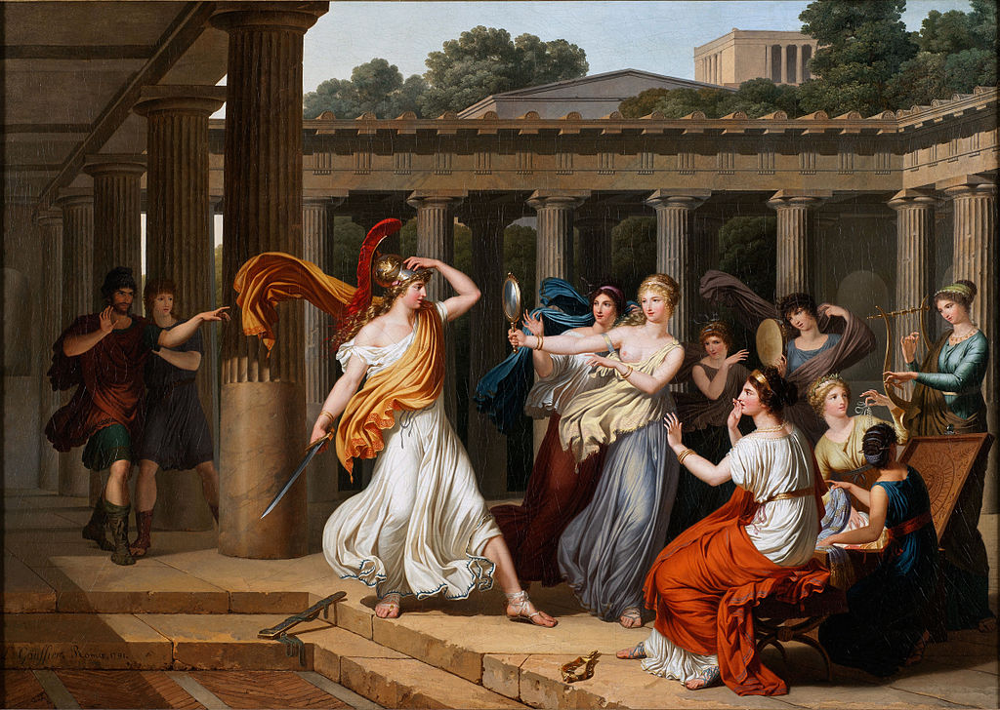

<head>
<meta charset="UTF-8" />
<meta name="keywords" content="drawing, painting" />
<meta name="description" content="drawings by Sunjy" />
<title>Sunjy</title>
<link rel="shortcut icon" type="image/x-icon" href="../../mImages/mCommon/favicon.ico" media="screen" />
<link rel="stylesheet" type="text/css" href="../../mCsses/mCommon/mCssA.css" />
<link rel="stylesheet" type="text/css" href="../../mCsses/mCommon/mCssB.css" />
<link rel="stylesheet" type="text/css" href="../../mCsses/mCommon/mCssC.css" />
<link rel="stylesheet" type="text/css" href="../../mCsses/mCommon/mCssD.css" />
<link rel="stylesheet" type="text/css" href="../../mCsses/mContent/mCssA.css" />
<link rel="stylesheet" type="text/css" href="../../mCsses/mContent/mCssB.css" />
<link rel="stylesheet" type="text/css" href="../../mCsses/mContent/mCssC.css" />
<link rel="stylesheet" type="text/css" href="../../mCsses/mContent/mCssD.css" />
</head>
<script type="text/javascript" src="../../mScripts/mContent/mContentAA.js" /></script>
<script type="text/javascript" src="../../mScripts/mContent/mContentAB.js" /></script>
<script type="text/javascript" src="../../mScripts/mContent/mContentAC.js" /></script>
<script type="text/javascript" src="../../mScripts/mContent/mContentAD.js" /></script>
<script type="text/javascript"></script> 
<script type="text/javascript">
document.write('<div class="mImgAbsolute"></div>');
/*
document.write('<p class="mFontSizeBColor" />From a white paper...</p>');
document.write('<table class="center"><tr><td>');
document.write('');
document.write('</td></tr></table>');
*/
</script>


<script type="text/javascript">
document.write('<p class="mFontSizeBColor" />Odysseus recognizes Achilles amongst the daughters of Lycomedes</p>');
document.write('<p class="mFontSizeSColor" />“Odysseus recognizes Achilles amongst the daughters of Lycomedes” by Louis Gauffier depicts Achilles disguised as a woman, hidden among King Lycomedes’ daughters in an attempt to avoid the prophecy of his death in the Trojan War. The cunning Odysseus had learned of his hiding place and had various gifts presented to the King’s daughters, including some weapons. Odysseus then had a battle trumpet played, knowing that Achilles would reach for the nearest weapon, which he did.<br><br>Louis Gauffier (1762–1801) was a French painter who spent most of his time in Italy. He could not receive patronage from France because he was branded a royalist, and this curtailed his career as a history painter. Instead, he painted landscapes, which he sold to English tourists.<br><br>Achilles<br><br>In Greek mythology, Achilles (Latin version) or Achilleus (Greek version) was a hero of the Trojan War, the greatest of all the Greek warriors, and is the central character of Homer’s Iliad.<br><br>Achilles’ most notable feat during the Trojan War was the slaying of the Trojan prince Hector. Achilles was killed near the end of the Trojan War by Paris. He was shot in the heel, his only weakness with an arrow. Legends state that Achilles was invulnerable in all of his body except for his heel because, when his mother Thetis dipped him in the River Styx as an infant, she held him by one of his heels.<br><br>Achilles’ Heel<br><br>Alluding to Achilles’ legends, the term “Achilles’ heel” has come to mean a point of weakness. The Achilles tendon is also named after him due to his legends.<br><br>Today, the term Achilles’ heel refers to a weakness despite overall strength, which can lead to downfall. While the mythological origin refers to a physical vulnerability, the idiomatic reference can apply to other qualities that can lead to defeat.<br><br>Odysseus or Ulysses<br><br>Odysseus, also known by the Latin variant Ulysses, is a legendary Greek king of Ithaca and the hero of Homer’s epic poem the Odyssey. Odysseus also plays a crucial role in Homer’s Iliad. Odysseus is renowned for his intellectual brilliance, guile, and versatility. He was known by the epithet Odysseus the Cunning. He is most famous for his homecoming journey, which took him ten years after the decade-long Trojan War.<br></p>');
document.write('<table class="center" /><tr><td>');
document.write('<br>Louis Gauffier (1762–1801) was a French painter who spent most of his time in Italy. He could not receive patronage from France because he was branded a royalist, and this curtailed his career as a history painter. Instead, he painted landscapes, which he sold to English tourists.<br><br>Achilles<br><br>In Greek mythology, Achilles (Latin version) or Achilleus (Greek version) was a hero of the Trojan War, the greatest of all the Greek warriors, and is the central character of Homer’s Iliad.<br><br>Achilles’ most notable feat during the Trojan War was the slaying of the Trojan prince Hector. Achilles was killed near the end of the Trojan War by Paris. He was shot in the heel, his only weakness with an arrow. Legends state that Achilles was invulnerable in all of his body except for his heel because, when his mother Thetis dipped him in the River Styx as an infant, she held him by one of his heels.<br><br>Achilles’ Heel<br><br>Alluding to Achilles’ legends, the term “Achilles’ heel” has come to mean a point of weakness. The Achilles tendon is also named after him due to his legends.<br><br>Today, the term Achilles’ heel refers to a weakness despite overall strength, which can lead to downfall. While the mythological origin refers to a physical vulnerability, the idiomatic reference can apply to other qualities that can lead to defeat.<br><br>Odysseus or Ulysses<br><br>Odysseus, also known by the Latin variant Ulysses, is a legendary Greek king of Ithaca and the hero of Homer’s epic poem the Odyssey. Odysseus also plays a crucial role in Homer’s Iliad. Odysseus is renowned for his intellectual brilliance, guile, and versatility. He was known by the epithet Odysseus the Cunning. He is most famous for his homecoming journey, which took him ten years after the decade-long Trojan War.<br>" />');
document.write('</td></tr></table>');
</script>


